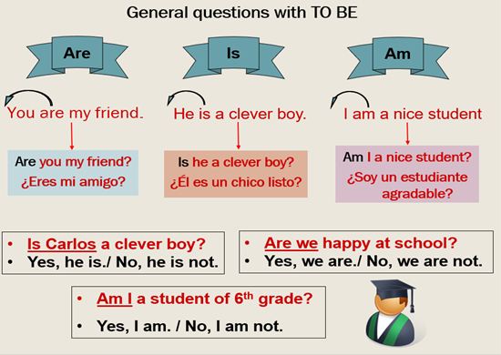
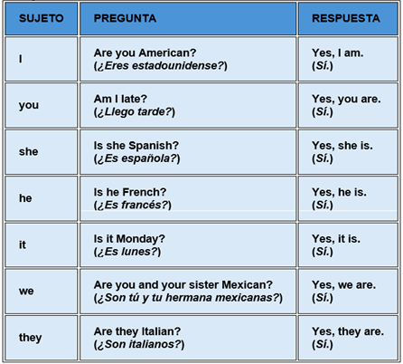
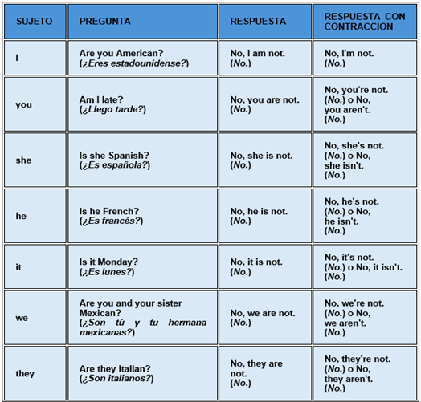
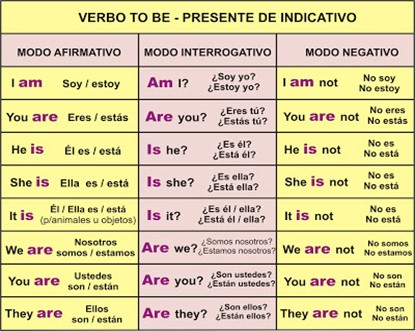

INTERROGATIVE SENTENCES
THE VERB TO BE “INTERROGATIVE FORM”
OBJETIVO: Afianzar la comprensión del verbo to Be en forma Interrogativa.
Lo primero que debemos recordar es que el verbo to be (ser o estar en español) nos permite conocer información del estado, situación o ubicación de algo o alguien.
Su estructura es:
verbo to be + sujeto + complemento + ?
Ejemplos de preguntas con el verbo to be:
Is she at home? -- ¿Ella está en casa?
Are they crazy? -- ¿Están locos?
Am I attractive? -- ¿Soy atractivo?
Para hacer las oraciones interrogativas se coloca el verbo to be (is, are, am) antes del sujeto y se agrega el signo de interrogación al final de la oración. Revisemos la información del siguiente cuadro.

Respuestas cortas:
Para contestar las preguntas YES o NO con el verbo to be, puedes decir simplemente yes o no, o puedes dar una respuesta usando el verbo to be. En las dos tablas a continuación hay ejemplos de las respuestas con to be usando todos los sujetos gramaticales posibles en inglés.
Respuestas afirmativas

Respuestas negativas
Ahora, veamos las respuestas negativas. A diferencia de las respuestas afirmativas, es posible usar una contracción para dar una respuesta negativa a una pregunta yes o no con el verbo to be.

Imágenes tomadas de: Las preguntas "sí" o "no" con el verbo "to be" | inglés.com (ingles.com)
Summary - Resumen

Imagen tomada de: https://aleksprztics.home.blog/2019/11/22/verb-to-be/
Observa este video donde encontrarás explicación de las tres formas estudiadas para construir las oraciones con el verbo to be